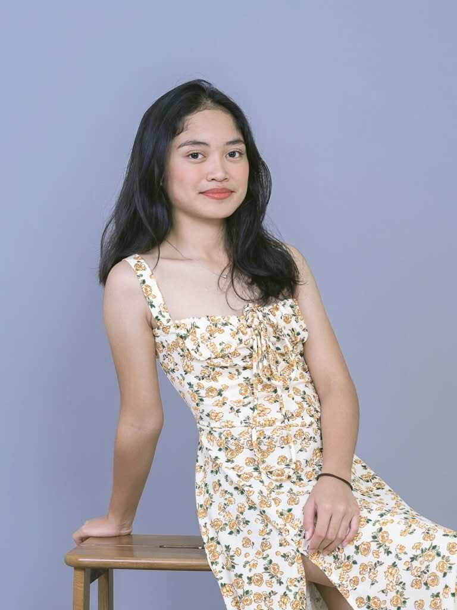
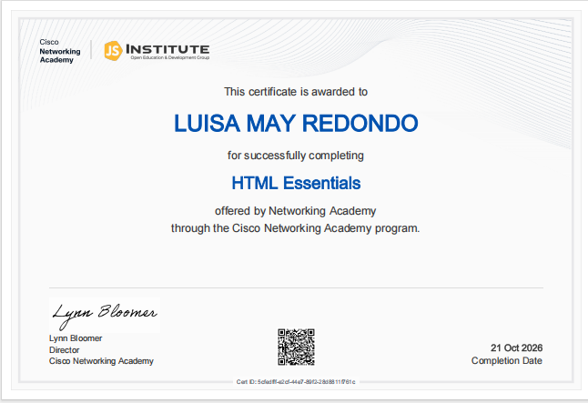
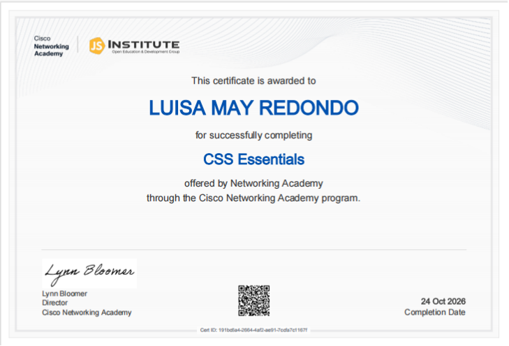

Luisa May T. Redondo
Information Technology Student
Hello, Welcome to my website portfolio! Where you can see my background as a beginner IT student. I hope you enjoy getting to know me!
About Me
Hello! I am Luisa, a first-year BSIT student from Bukidnon State University. I am 18 years old, born on May 21, 2008. I lived in Purok 3B Aglayan, Malaybalay City, Bukidnon. I graduated from Bukidnon National High School under the Humanities and Social Sciences strand.
I am passionate about learning and exploring different areas of Information Technology, particularly web development and programming. I am eager to develop my technical skills, gain new knowledge, and apply what I learn through various projects. As an IT student, I strive to continuously improve and prepare myself for future opportunities in the field.
My favorite color is yellow, which is why I chose this theme for my website as it also represents my personality. I am a shy-type and introverted person, but only loud for the people I am comfortable with.
My Interests: I am into photography, videography, editing pubmats (publication materials), and video editing.
- Enhance my coding skills.
- Master the C programming language.
- Master HTML and CSS.

My Skills
- Editing Pubmats
- Video Editing
- Photo Editing
- Videography
- Singing
- Dancing
Ever since the pandemic, I tried making some K-pop (Korean pop) edits on TikTok and began to love editing. I have also managed an Instagram account for our section in Grade 12 and posted some pubmats (publication materials) and video edits. These skills that I have developed throughout these past few years became the reason why I wanted to improve and learn more by taking an IT course.
My Projects

My project for the digital poster that focused on Ethical Use and Social Responsibility as part of the pervasive theme in IT Fundamentals subject.

My poster where I chose a digital awareness campaign about environmental awareness for my lab activity in IT Fundamentals.

I received a certificate after I finished taking the HTML Essentials free course in CISCO.

I have also taken and finished a free course for CSS in CISCO and received a certificate.
Contact Me
GMAIL: 2601105310@student.buksu.edu.ph
FACEBOOK: Visit my Facebook profile